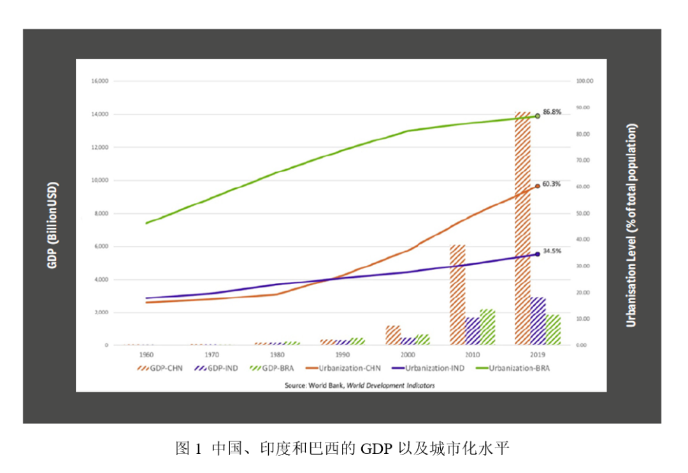
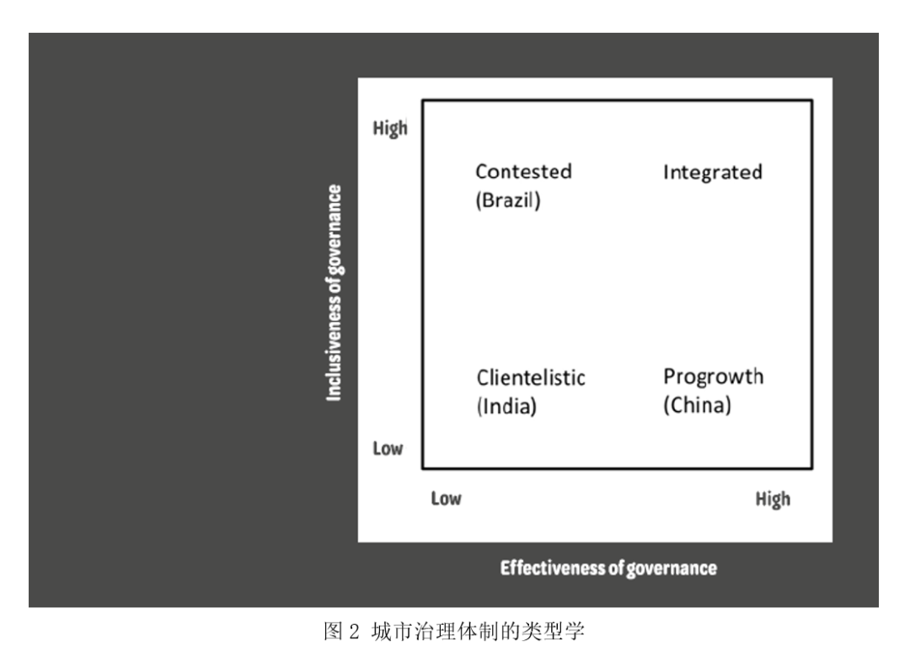

收录于合集 #比较政治学 121个
文献来源： Yue Zhang, “The Urban Turn in Comparative Politics: Cities as the Anchor of Cross-Nation, Cross-Regime Comparison,” APSA-CP Newsletter , Vol. XXX, Issue 1 (Spring 2020) ，pp.13-20.
作者简介： 张玥（Yue Zhang），北京大学国际关系学院本科，普林斯顿大学政治学博士，现为伊利诺伊大学芝加哥分校（University of Illinois at Chicago）政治学系长聘副教授，研究生项目主任， Urban Affairs Review 主编。
引言
城市在政治学研究中具有特殊地位，许多经典研究都是关于城市的（Hunter 1953; Banfield 1961; Dahl 1961）。然而，由于大多数研究聚焦的是美国城市，并且研究议题范围日益狭窄，城市政治的发展受到限制，并游离在主流政治学之外。不过这一情况正随着当前同时发生的两大趋势而相应改变。首先，随着比较政治中对次国家行为体研究兴趣的复兴，人们对城市政治的研究投入了更多的关注（Snyder 2001; Sellers 2005, 2019; Gibson 2013; Eaton 2017; Giraudy, Moncada, and Snyder 2019）。其次，全球范围内的城市研究学派正在形成，在比较政治和城市政治两大领域之间搭建了桥梁（McCarney and Stren 2003; Pasotti 2009, 2020; Read 2012; Zhang 2013; Donaghy 2018; Paller 2019）。由此，上述两大趋势表明了比较政治研究中的城市转向。
快速的城市化是当今发展中国家面临的重大挑战之一，因此城市与城市政治值得比较政治学家投入更多的关注。长期以来城市一直是政治与社会议题的焦点，它们的重要性以及相对自主性在去中央集权化和全球化的大潮中得到了极大提升（Post 2018）。除却研究城市和城市政治令人信服的实质性理由外，我认为分析城市层面的政治为学者们提供了一个激动人心的机会去追求跨国和跨政体比较研究的创新，特别是在存在巨大差异的政治体系之间。这一研究方法揭示出，地方状况和多层治理同全国层面的状况一样可以形塑发展结果，从而对比较历史分析与发展研究的创新做出贡献（Mahoney 2015; Duara and Perry 2018）。正如瑞德（Read 2018）指出的那样，跨体系比较具备促进新的、发人深省的理论建构和概念创新的潜力，从而与蒂利（Charles Tilly 1984）声称的“大结构、大过程以及大比较”相呼应。
在本文的以下部分，我将通过介绍自己即将出版的专著来描述可能的理论和概念的发展。我将使用书中关于中国、印度和巴西非正规住宅和城市治理中跨体制比较的例子。具而言之，我检视了这三个发展中大国的三个超大型城市中不同类型的非正规住宅的形成和治理。这一比较反映了非正规性的多样化，也说明了对城市治理来说重要的不仅仅在于有效性也在于包容性。我通过对城市治理进行类型学划分——整合型、增长型、竞争型以及恩庇型这四种类型来描述上述三国乃至更多国家的城市治理模式。
南方国家的城市化与非正规性的政治
我们生活在城市化的时代。全世界有超过一半的人口生活在城市当中，这一比例有望在2050年达到68%。不仅如此，大多数情况下的人口和经济增长发生在南方国家的大都市中（United Nations 2019: 12）。然而，南方国家城市化一个突出的特征是城市里遍布着在政府控制和管理之外的非正规住宅。联合国人居署发布的报告（UN- Habitat 2003：v）指出，大约有1/4的世界城市人口，合计10亿多人，生活在南方国家大都市的“贫民窟”中。非正规住宅问题因巨大的规模和对人类深远的影响而值得研究。进一步而言，这些住宅代表了一类特殊的城市空间。在这类空间中，政治和社会的张力很大，以至于它们提供了一个重要的角度去让我们审视南方国家中的国家与社会关系、治理以及公民权利（Davis 2017）。
诚然，贫穷与不平等并非南方国家专属，许多研究美国城市贫困问题的文献关注到城市中社区、公共住宅以及种族问题（Zorbaugh 1929; Hirsch 1983; Dewar and Thomas 2013）。然而由于不同的制度和城市背景，我们并不能简单的将北美或者欧洲的这些理论应用到南方国家当中。首先，在去中央集权化的联邦制度中，美国城市政治的研究通常聚焦在地方或者区域层面。相反，在南方国家中，全国性的政治制度对城市政治起到了更为重要的影响，并且城市化和国家发展间的关系更加明显。其次，比起北方国家或发达成熟的民主国家，社会动员和政治参与在南方新兴民主国家和非民主国家中表现不同。此外，不仅南方国家和北方国家对城市的定义不同，而且南方国家彼此之间对城市的定义也不一致。考虑到上述重大差异，提出新的理论、发展新的方法去研究南方国家的城市政治就显得格外必要。
“非正规住宅”一词最早见于英国人类学家凯斯·哈特（Keith Hart）1973年发表的关于加纳经济的研究。从那以后，学者们从经济学、社会学以及城市规划学等不同的学科角度对非正规住宅加以探索。与此同时，政治学家对国家和非正规性之间的关系投入了大量关注。科利尔（Collier 1976）在他研究棚户区和秘鲁独裁者关系的著作中指出，秘鲁当局鼓励穷人们在首都利马形成棚户区，以此推动乡村和城市的发展。查特吉（Chatterjee 2004）使用“政治社会”一词来描述贫民窟居民如何用选票来与政客们打交道以获取土地和服务。近来大量的研究对国家与非正规性之间的庇护关系，比如贫民窟中的政党网络和城市贫民中的非正规福利分配等，提供了深度分析（Holland 2017; Auerbach 2019）。正是在这种学术传统中，我对非正规性的研究才得以展开。
大规模比较：挑战以及可能
在提出我自己的研究设计之前，我想对发展中国家的跨国比较，特别是对不同地区、制度迥异的国家间的比较在方法上面临的挑战做出讨论。首先最重要的挑战是找到案例间的可比性。我提出的可行策略是将城市作为比较研究的抓手。由于城市间的比较在规模、社会经济以及空间特征上更容易控制，因此城市间的比较比国家间的比较更具可比性。并且与全国层面的比较相比，城市层面的比较更容易识别关键变量（Post 2018）。
然而使用城市作为分析单元会引起普遍性问题：如何将以城市为对象的研究发现应用到全国层面？对此，有两种可能的解决方案。首先，正如塞勒斯（Sellers 2005, 2019）强调的那样，需要通盘考虑作为“基础设施”的全国背景，这就需要通过多层分析来将城市间的比较和它们所处国家之间的比较整合起来。其次，需要有效地定义观点的适用范围。根据格尔茨和马洪尼（Goertz and Mahoney 2009）的说法，研究者需要设定他们观点的界限来保证在所有的观测值中测量和因果关系都是稳健的。上述洞见有助于阐释以城市为基础的分析如何对理解国家层面的政治起到帮助作用。
此外，大规模比较面临的另一大挑战是在跨国情境中搜集可靠的并且有可比性的数据。尽管这对在发展中国家开展研究的比较政治学家来说是一个普遍性问题，鉴于数据稀缺以及社会和制度在非正规环境中的复杂性，当要研究非正规性这一问题时，搜集数据就变得格外困难。对此，学者们试图提出新的研究方法去解决这一挑战，包括使用非官方文档、工作场所抽样、以及民族志人口调查等（Auerbach 2018; Post et al 2018; Thachil 2018）。
为了更清晰地描绘南方国家城市治理的蓝图与机制，我比较了中国、印度和巴西三国非正规住宅的形成和治理。具而言之，我选择了每个国家内部的超大型城市中的一类非正规住宅作为研究对象。尽管这三个国家在历史、文化、全国性制度以及政权层面大相径庭，但是正如图1所示，它们在近几十年来都随着经济增长经历了快速的城市化发展。因此，尽管上述三国在国家层面存在差异，但相同的经历使得它们的城市成为理想的比较对象。不仅如此，上述三国国家干预的进程和结果都大相径庭，而这些差异恰好反映了中印巴三国不同的发展路径和治理模式。

城市治理体制的类型学
研究国家能力的文献为理解国家和非正规性之间的关系提供了坚实的理论基础（Boone 2012; Slater and Kim 2015; Centeno, Kohli, and Yashar 2017）。具而言之，海勒（Heller 2017）在对印度、南非以及巴西的城市研究中，将研究视角从全国转移到地方，他指出经济增长和社会包容是检验国家能力的两大关键维度。在这些富有见解的研究基础之上，我通过对城市治理体制进行类型学的划分来解释国家对非正规住宅干预的不同进程和结果。我将城市治理体制定义为国家和非国家层面网络的交互关系，它具有两大维度：有效性和包容性。其中有效性指的是城市治理工程在多大程度上能被成功地推进，包容性则是城市治理的社会基础，或者说是城市治理进程中对社会利益的包容程度。这两大维度受到三类变量的形塑，它们分别是政府间关系、政党制度以及非国家层面的网络。前两个变量影响城市治理的有效性，第三个变量则影响城市治理的包容性。
图2展现了4类城市治理体制。其中，整合型体制在有效性和包容性两个维度上都具有较高的水平，属于理想型体制。换言之，在不同的社会和政治利益之上进行整合并展开合作，最有可能推动有效、包容以及可持续的发展。增长型体制，在有效性维度上水平较高，但是包容性却处于较低水平，通常依赖于地方当局和企业利益形成的联盟。尽管增长型体制可能会推动大规模治理工程的实施，但经常导致经济增长与社会发展间的不平衡。竞争型体制是在不同的参与方之中存在竞争的一种体制，其特征是有效性程度较低，但是具有较高水平的包容性。这一模式建立在对广泛的社会利益包容的基础上，但是不同社会利益之间的竞争可能会阻碍政策的实施。我对恩庇型体制的定义则围绕国家的寻租行为展开，这种体制在有效性和包容性两个维度上的水平都较低，可能出现缓慢且排他式的发展。

在上述四种可能的体制类型中，其中增长型、恩庇型以及竞争型分别对应了中国、印度以及巴西三国的城市治理体制。接下来本文将解释这些城市治理体制如何在这三类国家中运作。
非正规空间中的国家干预：三城记
为了解释中国、印度和巴西的城市治理体制如何运作，我分别选择了这三个国家中的超大型城市广州、圣保罗和孟买中的非正规住宅作为研究对象，其中每一种类型的居住形态都代表了一种重要的非正规住宅实践，在此基础上我分别检视了上述居民区中国家的干预行为。根据定义，超大型城市是居住人口数超过1000万的地区。当今世界有30个超大型城市，其中三分之二的超大型城市位于发展中国家。它们不仅是发展中国家吸引城市发展的磁石，也是广大城市群体面临挑战的缩影（United Nations 2014: 13-14）。广州、孟买和圣保罗这三大城市都是正在兴起的全球性城市，并且也是所在国重要的经济、金融以及贸易城市。它们吸引了许多移民，但同时也造就了较高程度的不平等。
城中村，广州
广州是中国改革开放的前沿阵地，当地生活着1450万的居民，其中38%的居民、以农村移民为主，居住在城中村中。这是一种因地方政府选择性征地而产生的非正规住宅。在大量征用农业用地用于开发后，地方政府留下了村民的宅基地，这样有助于减少土地征用的成本。村民们在属于他们集体所有的宅基地上建立了带很多套间的小楼房并且向外来务工人员出租，后者是因缺乏本地户口而无资格购买当地经济适用房的庞大群体。村民们这种用于出租的住房建设和经营不受任何政府部门的监督。每一个城中村都有一套复杂的自治机构，包括村委会、村党组织、村股份公司以及宗族网络等多方，因而造就了多方管理的交叠。与此同时，这些机构还负责村庄基础设施的建设和公共服务的提供。
在中央的支持下，广州于2009年开始城中村的改造工作。这是中央政府转变经济发展方式、推动产业结构调整工作的一部分，旨在通过建立高科技和高附加值的产业来取代传统的劳动密集型产业。为此，广州市政府专门设立了城市更新局（Municipal Bureau of Urban Renewal）来负责监督改造工作，具体项目的实施则由房地产开发商主导。大型房地产公司、特别是国有企业，因更强的资质和与政府更紧密的联系而在改造的过程中占有更多的优势。
尽管村民委员会代表了村民选择开发商，但是开发商仍然需要进村挨家挨户地去谈补偿事宜。常见的改造模式是拆掉整个村庄并在其土地上进行重建。作为补偿，开发商向村民提供免费的回迁房，完工后每个家庭都能获得单元楼中的多套住宅，村集体物业也得到进一步建设。而原村庄中剩下的土地被开发商用来建造商品房和商业设施以便为这些工程融资。开发商建造的住房密度通常很高，往往需要地方政府对原有区划进行调整。
地方政府和开发商联合的经济增长联盟极大地改变了中国城市。昔日宛如贫民窟的城中村已经为豪华公寓、连锁酒店和高档零售场所所取代。但是改造工程的社会基础较为有限，无法提供充足的参与渠道。尽管改造工程给村民和村集体带来了巨大的收入，但是民工租客被排除在村庄改造之外，他们对住房的需求从未得到重视。尽管当局将城市化视为推动发展的重大战略，但主要关切的是土地问题，而非城市化进程中的人。因此，城市和乡村的割裂在城中村改造工程中被复制出来。
棚户区，孟买
孟买是印度的经济中心，有1240万人居住于此，其中42%的人口居住在棚户区当中，也就是通常所说的贫民窟。很多人非法侵占公共或私人土地，在上面搭建棚户，没有合法的产权。这些社区缺乏基本的基础设施和服务，十分拥挤，卫生条件也较差。棚户区的扩散与20世界60年代以来孟买当局推行的租金管制和控制土地使用的一系列政策密切相关。这些政策使得私营部门失去了建设租赁住房和经济适用房的兴趣。与此同时，由于棚户区中居民数量众多，成为政党们的“票仓”。为了能获得棚户区居民的选票，每逢选举季，政客们就帮助他们注册为选民，向他们提供服务，因此使得棚户区的存在变得固化下来。
孟买的棚户区改造始于1995年，领导权不在市政府手中，而是由邦一级的机构贫民窟改造局（Slum Redevelopment Authority）负责，该机构直接由马哈拉施特拉（Maharashtra）邦首席部长领导。改造的方式是拆除棚户区并为2000年1月1日之前定居于此的居民提供免费的住宅。其中，政党推动了改造的进程。孟买当地的长期执政党希夫·塞纳（Shiv Sena）向棚户区的居民做出竞选承诺——向当地居民提供免费的住宅，这样能收获他们的选票（Mukhija 2003）。
依照这一改造模式，棚户区居民的回迁房都是原址重建，这是因为政党不想失去他们的“票仓”。棚户区居民回迁住宅的标准面积很小，不管家里几口人，都只有269平方英尺大（约25平米）。许多回迁房从设计到建造都很糟糕，成为“立体贫民窟”。相应的是，贫民窟剩余的土地则被开发商们用来建造商品房。孟买一些最著名的房地产工程就是通过这种方式在原来贫民窟的土地上建造的。居住在这些价值数百万美元豪宅中的富豪与生活在破旧公寓中的贫民窟居民比邻而居，而这种贫富两重天之间的距离仅仅有一墙之隔。
在恩庇型的城市治理体制下，孟买棚户区的改造工作变得格外缓慢，许多工程都延宕多年。尽管改造工作赋予了原棚户区居民的合法产权，但并没有减少他们对政党的依赖性。究其原因在于贫民窟在改造后，他们需要依赖政党干部来提供建筑物维护和供应服务，因此就没有触动原来的恩庇关系。不仅如此，作为消除非正规住宅的举措，贫民窟改造工程导致了住宅市场的两极分化，因而固化了印度空间和社会层面的不平等。
住房运动，圣保罗
圣保罗的经济体量在巴西GDP中占据了很大比重，这座城市住有1220万人，相当多的人居住在自建的非正规住宅中，即所谓的贫民窟（favelas，特指巴西的贫民窟），或条件恶劣的群组公寓cortiços（葡萄牙语“蜂巢”）。与此同时，在圣保罗历史悠久的城市中心区，集中了70%的工作，而房屋空置率却高达30%。从20世纪90年代早期起，圣保罗出现了激进的住房运动。这一时期在城市工作的工薪阶层家庭买不起自住房，就组织起来占领市中心的空置房。从1997到2012年间，总共有120栋建筑被住房运动占领。截至2018年5月，市中心仍有70座建筑被占领着，并且住着4000多户家庭。
与其他类型的非正规住房实践不同，圣保罗的住房运动通过法律和制度化的手段与国家谈判。正因为80年代兴起的城市改革运动，巴西拥有全世界最激进的立法体系。其1988年施行的宪法承认“居住权”并且强调城市和城市财产需要满足社会功能。在我与他们的会见和访谈当中，住房运动的领袖充分援引了相关法律法规，强调居住权是宪制性权力，缺乏住所的社会现象侵害了公民权利。同时，运动的领袖是市政住房委员会的一部分，该议会于2002年在宪法授权下成立。他们将市政住房委员会作为影响决策的平台，使得住房运动的参与者免遭法院和警察的驱逐（Donaghy 2018）。
尽管事实上的住房运动是对财产权的破坏，但这一运动的合法性又受到不同层级大小官员的承认。在劳工党籍市长费尔南多·哈达德（Fernando Haddad）的领导下，圣保罗市议会通过了对空置住房征收累进财产税的政策。同时，市政府还将市中心的一些空置房屋征用并转换为社会住房，并批准了更多社会住房的建设工程。然而，党派政治延缓了征收累进税这一政策的实施，从而导致了住房运动和国家当局之间的僵局。
圣保罗的住房运动代表了城市治理体制中的竞争型模式。在这种模式中，不同的行动者和不同的利益相互竞争，政策过程受到竞争的形塑，最终国家制度内外的不同参与者需要进行谈判和相互妥协。与此同时，住房运动展示了打着“城市的权利”的旗号，以声索权利为基础的社会运动方式。以声索权利为基础的社会运动开辟了集体动员的新空间，为弱势群体争取生存空间提供了新的话语和工具。
结论
中国、印度和巴西不同的城市治理体制，在形塑国家对非正规住宅干预的进程和结果中扮演着重要的作用。这一比较对理解南方国家的政府、治理和城市化具有多重意义。首先，对非正规住宅来说，因为它是高度异质的，我们需要超越对“贫民窟”的简单定义从而更好的理解非正规性内部的政治。不同形式的非正规住宅是不同的国家- 社会关系的空间呈现。其次，我们需要从有效性和包容性两个方面去理解国家能力和城市治理。除非治理工程建立在更广泛的社会利益之上，那么将非正规住宅正规化的举措将导致更多的非正规现象的出现，并且也将加剧不平等。第三，城市化并非线性进程，因为“城市”的定义本身就是有争议的，它取决于国家的发展议程这一宏观背景。
古语云：所有的政治都是地方性政治。不仅如此，从地方层面入手进行分析有助于我们获得对于更高层政治的洞见。由于城市之间的比较比国家之间的比较更为可行，城市层面的分析方便了我们进行跨国和跨政体的比较，因而有助于理论的发展与创新。朝前看，学界需要注意比较城市政治研究中的两大议题。首先，通过小处着眼，大处着手，以城市为基础的分析能帮助我们更好的理解国家和全球层面的现象并解决大问题。其次，政治学家需要与其他学科的城市研究学者进行更多的互动，以便参与到更广泛的关于城市议题的讨论中来，并提高对城市和城市政治的动态认识。
译文已经张玥教授审订！
编译：杨端程 编辑：康张城
【政文观止Poliview】系头条号签约作者